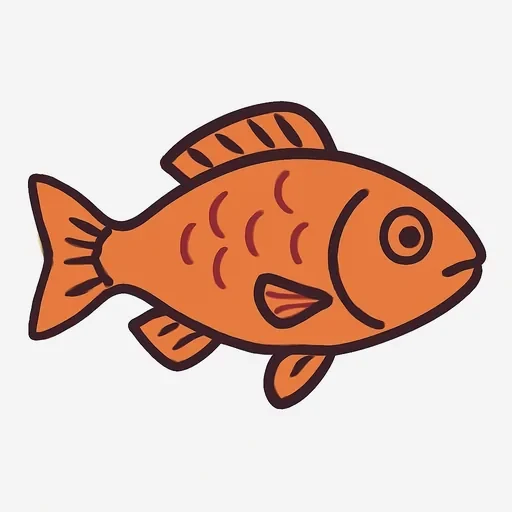
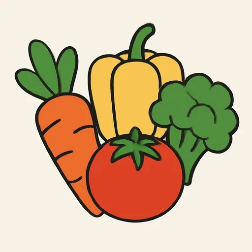

Черновик: урок написан, но преподаватель его ещё не вычитал.
Semana 11 · Día 2 — Gustar (1): me gusta = мне нравится
Неделя 11 · День 2 — Gustar (1): me gusta = мне нравится
Сегодня вы научитесь
- говорить о своих вкусах конструкцией, которая устроена ТОЧНО как русская «мне нравится»;
- ставить me / te / le и понимать, почему в испанском нет «я люблю кофе»;
- спрашивать ¿Te gusta…? и отвечать двадцатью фразами о себе и о других.
1. Разминка (0–3 мин)
- Карточки: 10 слов (вчерашние: tomar, zumo, queso, jamón…).
- Вопрос по вчерашнему: ¿Qué desayunas? Ответьте вслух двумя фразами — и проверьте, стоит ли un / una перед чашкой и тостом.
2. Фонетика (3–6 мин)
Слова склеиваются: me gusta el café — это четыре слова и пять слогов. Испанец не делает паузы между словами: безударные me, el, la, los прилипают к следующему слову. Прочитайте, не разрывая, по слогам:
Me gusta el café. → me-GUS-tael-ka-FÉ Me gusta el arroz. → me-GUS-tael-a-RRÓZ Me gusta la carne. → me-GUS-tala-KÁR-ne ¿Te gusta el pescado? → te-GUS-tael-pes-KÁ-do
Два гласных рядом («gusta el») сливаются в один слог — это и есть испанский ритм. Русский говорит рубленее, слово за словом, и фраза сразу звучит по-русски. Запишите четыре фразы и послушайте себя: есть ли паузы?
3. Новое (6–16 мин)
Пример
Paula и Serguéi решают, кто готовит в субботу. [AUDIO]
| Español | Русский |
|---|---|
| Paula: Serguéi, ¿te gusta el pescado? | Сергей, тебе нравится рыба? |
| Serguéi: No, no me gusta el pescado. Me gusta la carne. | Нет, рыба мне не нравится. Мне нравится мясо. |
| Paula: ¿Y el arroz? ¿Te gusta el arroz con verdura? | А рис? Тебе нравится рис с овощами? |
| Serguéi: Sí, me gusta. Y me gusta mucho cocinar. | Да, нравится. И мне очень нравится готовить. |
| Paula: ¡Perfecto! Yo no cocino nunca. A mí me gusta comer fuera. | Отлично! Я никогда не готовлю. Мне нравится есть не дома. |
| Serguéi: ¿Y a Carlos? ¿Le gusta el arroz? | А Карлосу (наш сосед)? Ему нравится рис? |
| Paula: A Carlos le gusta todo. Y le gusta mucho el chocolate. | Карлосу нравится всё. И ему очень нравится шоколад. |
| Serguéi: Entonces el sábado cocino yo: arroz con verdura y pollo. | Тогда в субботу готовлю я: рис с овощами и курица. |
| Paula: ¿Y de postre? | А на десерт? |
| Serguéi: Chocolate, claro. | Шоколад, конечно. |
Прочитайте диалог вслух. Подчеркните каждое gusta — и то слово, которое стоит СРАЗУ ПОСЛЕ него.
Объяснение
Сначала сравните две фразы:
Мне нравится кофе. → Me gusta el café. Тебе нравится рыба? → ¿Te gusta el pescado?
Это не похожая конструкция. Это та же самая конструкция. В обоих языках: тот, кто испытывает чувство, стоит в дательном падеже («мне», «тебе»), а вещь — это подлежащее, и глагол согласуется с ВЕЩЬЮ, а не с человеком. Дословно me gusta el café = «мне нравится кофе», и порядок слов тот же.
| Кому (дательный) | Глагол | Что нравится (подлежащее) |
|---|---|---|
| me — мне | gusta | el café |
| te — тебе | gusta | el pescado |
| le — ему / ей / Вам | gusta | el chocolate |
Три формы на сегодня (остальные три — завтра):
| Español | Русский |
|---|---|
| me gusta | мне нравится |
| te gusta | тебе нравится |
| le gusta | ему / ей нравится; Вам нравится |
Что может стоять после gusta:
| После gusta | Пример | Русский |
|---|---|---|
| существительное в ед. ч. с артиклем | Me gusta el café. | Мне нравится кофе. |
| инфинитив (любой глагол!) | Me gusta cocinar. | Мне нравится готовить. |
| два инфинитива подряд | Me gusta comer fuera. | Мне нравится есть не дома. |
Отрицание — просто no впереди: No me gusta el pescado. Порядок жёсткий: no + me + gusta. ✗ Me no gusta.
В диалоге встретилось me gusta mucho cocinar — «мне ОЧЕНЬ нравится готовить». Пока запомните mucho как готовый кусок; всю градацию («обожаю — очень нравится — нравится — не очень — совсем не нравится») разберём в четверг.
le — это сразу «ему», «ей» и «Вам», поэтому часто нужно уточнить кому. Уточнение ставится ВПЕРЕДИ, с предлогом a, и само le при этом никуда не исчезает:
A Carlos le gusta el chocolate. — Карлосу нравится шоколад. A Paula le gusta comer fuera. — Пауле нравится есть не дома. A mi madre le gusta el té. — Моей маме нравится чай. ¿A usted le gusta la paella? — Вам нравится паэлья?
Запомните формулу: a + имя + le gusta + вещь. Два слова на «кому» — это нормально по-испански.
Вопрос и короткий ответ:
— ¿Te gusta el café? — Sí, me gusta. / No, no me gusta. — ¿Qué te gusta más? — Me gusta el chocolate.
⚠️ Контраст с русским
- В русском есть ДВА способа сказать это. Первый: «Я люблю кофе» — я подлежащее, кофе дополнение. Второй: «Мне нравится кофе» — «мне» дательный, «кофе» подлежащее, глагол согласуется с кофе.
- В испанском работает только второй. Me gusta el café — слово в слово «мне нравится кофе». Поэтому переводите себя ВСЕГДА через «мне нравится», а не через «я люблю»: тогда вы не сделаете ни одной ошибки в структуре. Это лучший подарок русского языка в этом курсе — пользуйтесь им.
- Вы захотите сказать: ✗ Yo gusto el café. (из «я люблю кофе» и из английского I like coffee) → Правильно: ✅ Me gusta el café.
И два места, где всё-таки ошибаются — предупреждаем заранее:
- Артикль в общем смысле обязателен. По-русски «мне нравится кофе» — кофе голый. По-испански нет: ✗ Me gusta café → ✅ Me gusta el café. Так же: ✅ Me gusta la carne, No me gusta el pescado, Me gusta el chocolate. Правило: когда речь о продукте ВООБЩЕ, перед ним стоит el / la / los / las.
- Согласование с множественным числом. Если нравятся вещи во множественном числе, меняется глагол — ровно как в русском «нравится → нравятся»: ✗ Me gusta los huevos → ✅ Me gustan los huevos. Русский здесь снова помогает («мне нравятся яйца»), но ошибку делают почти все, потому что запоминают me gusta как одно неизменяемое слово. Это главная тема завтра.
4. Практика (16–26 мин)
Упражнение А. Дополните me, te или le. Все вещи — в единственном числе.
Модель: (yo) ___ gusta el café. → me gusta el café
- (yo) ___ gusta el chocolate.
- ¿(tú) ___ gusta el pescado?
- A Paula ___ gusta comer fuera.
- (yo) No ___ gusta la cebolla.
- ¿A usted ___ gusta la paella?
- A Serguéi ___ gusta mucho cocinar.
- ¿(tú) ___ gusta el té con limón?
- A mi hermana ___ gusta el arroz con verdura.
- (yo) ___ gusta desayunar en el bar.
- A Carlos no ___ gusta la fruta.
Упражнение Б. Дополните фразы. Банк слов:
el café · la carne · el chocolate · cocinar · la verdura · el pescado · comer fuera · el arroz
- Me gusta ______: todos los días tomo dos tazas por la mañana.
- No me gusta ______: no como carne de vaca ni pollo.
- A Serguéi le gusta ______: el sábado prepara la cena.
- A Paula no le gusta cocinar; le gusta ______, en un bar o en un restaurante.
- Me gusta ______ con leche: tomo chocolate de postre.
- ¿Te gusta ______? En España es un plato muy común, sobre todo en la costa.
- No me gusta ______, pero como tomate y ensalada.
- Me gusta ______ con verdura: es un plato fácil y barato.
Упражнение В. Исправьте ошибки. В каждой фразе одна ошибка.
Модель: Yo gusto Me gusta el café.
- Yo gusto el chocolate.
- Me gusta café con leche.
- A Paula gusta comer fuera.
- Me no gusta el pescado.
- Te gustas la carne?
- A Serguéi le gusta el cocinar.
- Me gusta los huevos.
- A mi madre le gusta té.
5. Выход (26–29 мин)
Напишите двадцать фраз о вкусах: десять о своих и десять о чужих. Свои — с me gusta и no me gusta; чужие — с a + имя + le gusta. Берите еду и напитки прошлого урока плюс инфинитивы (cocinar, desayunar, comer fuera, tomar café, cenar tarde).
Me gusta el café con leche. No me gusta el té. Me gusta mucho el chocolate. Me gusta cocinar los domingos. No me gusta desayunar temprano… A mi madre le gusta el pescado. A mi hermano no le gusta la verdura. A Serguéi le gusta cocinar…
Перечитайте список и проверьте три вещи: есть ли me / te / le; стоит ли el / la перед продуктом; все ли вещи в единственном числе (множественное — завтра).
6. Итог (29–30 мин)
- [ ] Я знаю, что me gusta — это слово в слово «мне нравится».
- [ ] Я ставлю me / te / le и уточняю кому через a + имя.
- [ ] Я не забываю артикль: me gusta el café, а не me gusta café.
- Добавьте слова дня в колоду. Завтра — gustan и четыре ответа «и мне тоже».
Словарь дня
| Español | Русский | Пример |
|---|---|---|
| gustar | нравиться | El verbo gustar. |
| me gusta | мне нравится | Me gusta el café. |
| te gusta · ¿Te gusta…? | тебе нравится · Тебе нравится…? | ¿Te gusta el pescado? |
| le gusta · a Paula le gusta | ему / ей / Вам нравится | A Paula le gusta comer fuera. |
| cocinar | готовить | Me gusta mucho cocinar. |
| comer fuera | есть вне дома, ходить в кафе | A Paula le gusta comer fuera. |
 el pescado |
рыба | No me gusta el pescado. |
| la carne · el pollo | мясо · курица | Me gusta la carne. Arroz con pollo. |
 la verdura |
овощи | Arroz con verdura. |
| el chocolate · el arroz | шоколад · рис | Me gusta el chocolate. ¿Te gusta el arroz? |
Ответы
А. 1. me · 2. te · 3. le · 4. me · 5. le · 6. le · 7. te · 8. le · 9. me · 10. le. — В 3, 5, 6, 8, 10 le остаётся, хотя «кому» уже названо через a: это не ошибка и не повтор, а испанская норма.
Б. 1. el café · 2. la carne · 3. cocinar · 4. comer fuera · 5. el chocolate · 6. el pescado · 7. la verdura · 8. el arroz.
В. 1. Me gusta el chocolate. (✗ yo gusto — калька с «я люблю» и с английского I like) · 2. Me gusta el café con leche. (в общем смысле артикль обязателен) · 3. A Paula le gusta comer fuera. (le не выбрасывается) · 4. No me gusta el pescado. (порядок: no + me + gusta) · 5. ¿Te gusta la carne? (глагол согласуется с la carne, а не с «тобой»; плюс ¿ в начале) · 6. A Serguéi le gusta cocinar. (перед инфинитивом артикля нет) · 7. Me gustan los huevos. (множественное число — завтрашняя тема) · 8. A mi madre le gusta el té.